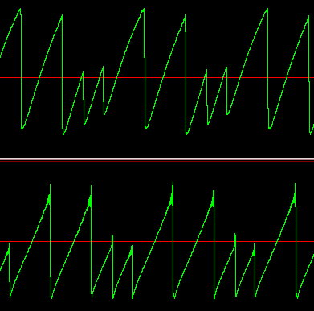

Orchestra and Score of the Week
Hans Mikelson
Not Another TB Simulation...
Why do I keep trying to simulate the TB? I don't know. But if you haven't gotten sick of the sound of this crazy machine yet here is another simulation.
First I got a sample from:
I used the one found under clones then chose original TB acid-line. I then tried to duplicate this sound. This is a "square" wave and I use the term loosely. One of the first things I noticed was that the filter only wiggled in the positive direction (most of the time). I thought I would try to simulate this by passing the positive impulse through a filter with high resonance and the negative impulse through a filter low resonance. I then noticed a large low frequency oscillation in the waveform. I tried simulating it with a mass spring system but it was more extreme. I then used a cubic for a restoring force and that seemed to make the system behave quite a bit like the original. The top image is from an actual Roland TB-303 and the bottom image is from my orchestra/score:
Towards Analog Sounding Filters
What is it about analog filters that makes them sound so great? I'm not sure but one way I have been able to make a filter sound less digital is by adding some overtones to it. The problem then was that I was not able to sweep it as high as I wanted. I use an if statement to branch around an overtone if it gets too high in frequency. The tables control the frequency, amplitude and band width of the overtones. Cranking the volume on these will result in some wild sounding filters. When using butterbp I found that a bandwidth based on the frequency raised to a power seemed to create a constant amplitude when swept across white noise. I also fade out the overtones as Q goes to zero using iq3. Otherwise they start dominating everything.
Band Limited Oscillator Synchronization
Here is my attempt to create a bandlimited synchronized oscillator with a triangular waveform. The shape looks right and the sound is very much like my Matrix 6R's oscillator sync. For some reason I had to go to sr/4 for the impulse. Basically I generate two bandlimited impulse trains. The first one is integrated to form a sawtooth wave. The second impulse is subtracted from the sawtooth wave but the second impulse is first scaled so that it is always the magnitude of the sawtooth wave. That way the sawtooth gets pulsed down to zero. Finally there was a problem when both impulse occured at nearly the same time. To avoid this a window is set up that prevents a second reset from occuring when one is about to occur anyway.

The top waveform image is a sample taken from my Matrix 6r The bottom waveform is from my Csound instrument.
Follow the Bouncing Ball
bouncepl.txt bounce.orc bounce.sco
The file bouncepl.txt is actually a Perl program. You can rename it as bounce.pl when you save it to your computer. For some reason I was not able to download it when I named it bounce.pl. The Perl program is used to generate scores based on a bouncing ball. The equations are a little like the mass spring system. This time acceleration is provided by gravity. The ball has certain characteristics such as elasticity and pitch.
Runge-Kutta Mass-Spring with Oscillator
This is another version of the mass-spring system simulation but this time I have used the Runge-Kutta technique rather than the Euler technique. This allows me to go to higher frequencies before the approximation fails. Be sure to check out the following link:
http://zebu.uoregon.edu/~kevan/ph252/022196/022196.html
This has an excellent discussion of the mass spring system and how it relates to chaos.
Spatial Audio in Flatland
space2d.orc space2d.sco algcmp.wav limit.wav
This is a spatial audio system I wrote using Csound a couple of years ago. I have tried to implement the following:
Moving sound source with table supplied moving X and Y coordinates, volume decreases as 1/r^2, filtering of sound due to air absorption, Doppler effect due to moving sound, simplified HRTF for head shadow filtering, inter ear time delay, speaker cross-talk cancellation based on both inter-ear time delay & head shadowing, room reverberation which varies with distance.
The algorithm is 2-dimensional and does not attempt to introduce height cues...but that might be a fun exercise for someone ambitious.
Mass-Spring with Noise
I was asked to provide a flow diagram of this system and after some thought I decided that it was best to consider the mass spring system as a single block. Otherwise it will no longer make sense when you replace the simple Euler approximation with a more complex Runge-Kutta approximation.
This is a simulation of a mass on a spring being stimulated by noise. This is one of the simplest physical models. This example is based on the following:
so

Next use Euler's method to update the position of the mass on the spring:
Notice that a damping factor is used on the velocity.
Machine Language
machine.orc machine.sco machine.wav (349K) machine.mp3 (251K)
A variation on my industrial noise. This example loops a small section of a sample and passes it through a filter. The cut-off frequency of the filter is passed as a table to the instrument. Use any complex sample with it or download machine.wav. This can be used to create sounds like industrial machinery.
Electric Snare
Here is a simulation of a drum machine snare. I start with an impulse from vco and filter it for the drum tone. I mix in some high pass filtered noise for the spring.
Fractal Static
This instrument uses a dynamical system to generate intermittent "pops" which sounds ranging from a scratchy record to a glass being filled with soda.
Crunchy Synth
crunch.orc crunch.sco crunch.mp3
This is a crunchy little analog sounding synthesizer. The low pass filter resonance is "extracted" and passed through a waveshaper to clip it before it is rejoined with the low pass signal.
Chimes
chimes.orc chimes.sco chimes.xls chimes.mp3
This is an instrument created by generating two spherical lissajous curves and applying an exponential envelope to them. For more information on the spherical lissajous curve see the Spring 1999 issue of Csound Magazine. The spreadsheet file can be used to generate random chime sound events. Save the file as a text file named chime2.sco or something similar. The score provided was generated in part by using this spreadsheet.